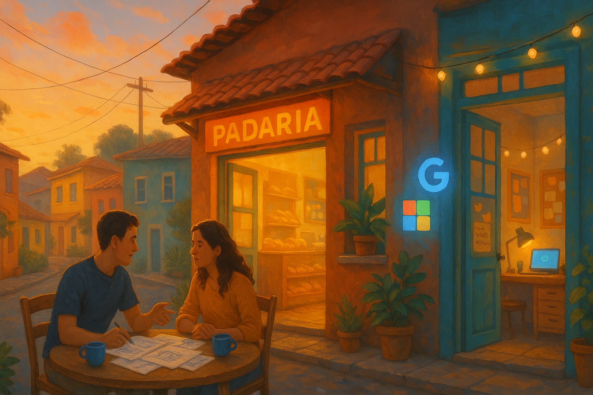

Como construímos a Área 51: uma história sobre confiança digital humana
Esta é uma leitura de aproximadamente dez minutos sobre o caminho que percorremos para transformar a ideia de um espaço seguro em uma experiência acolhedora para gente comum. Sem jargões, com memórias sinceras e o convite para escrever o próximo capítulo juntos.
Introdução — O primeiro rabisco em um guardanapo
A história da Área 51 começou longe de telas de computador. Foi numa padaria de esquina, numa manhã abafada, quando percebemos que nossos clientes repetiam a mesma confissão: “Quero vender mais, mas tenho medo de pedir login. As pessoas somem quando leem a palavra autenticação”. Ninguém queria afastar visitantes com formulários complicados. Também não queríamos abrir mão da segurança. Ficamos em silêncio, rabiscando num guardanapo o que parecia um sonho impossível: um ambiente protegido que soasse mais como abraço do que como porta de ferro.
Esse guardanapo foi a primeira “planta baixa” da Área 51. Tinha setas, corações e frases soltas: “tem que sorrir”, “tem que impedir golpes”, “tem que funcionar no celular do seu João”. Não falávamos de protocolos, tokens ou servidores. A língua oficial daquele momento era o bom senso de quem sabe que confiança não nasce de telas frias, e sim de gestos pequenos e repetidos. Ali decidimos que, se fosse para erguer uma fortaleza digital, ela teria janelas abertas para as pessoas verem quem somos.
Saímos dali com a missão de construir algo que pudesse ser explicado para nossas mães, tias e amigos. A Parte 1 da jornada foi convencer a nós mesmos de que daria certo. A Parte 2 seria convencer cada pessoa que cruzasse a porta virtual da Área 51 de que ela estava em casa.
Capítulo 1 — O que aprendemos ouvindo histórias de desconfiança
Antes de escrever uma linha de código, saímos para conversar. Pastelaria, coworking, sala de reunião improvisada: todo lugar virava consultório de relatos sinceros. Ouvi histórias de gente que perdeu clientes porque o botão “Entrar” exigia cadastro com CPF. Donas de loja relataram ataques de bots e tentativas de invasão. Em comum, o sentimento de estar em apuros: “Preciso proteger minha marca, mas não posso assustar quem chega”. Quanto mais ouvíamos, mais forte ficava a ideia de que o problema era humano antes de ser técnico.
Nessas entrevistas coletamos pequenas pérolas. Uma delas veio de um marceneiro que vendia móveis online: “Se vocês me ajudarem a parecer profissional sem virar robô, eu assino agora”. Foi um sinal claro de que a Área 51 deveria ser menos sobre muros e mais sobre jardins bem cuidados. Nossa meta deixou de ser “implantar autenticação” e virou “contar uma história de acolhimento com senha forte”.
Reuni esses depoimentos numa planilha, mas a planilha não traduzia os olhares. Então transcrevemos frases em cartazes coloridos e colamos na parede do escritório. Toda decisão futura sobre a Área 51 deveria ser comparada com aquelas vozes. Sempre que caíamos na tentação de usar uma palavra difícil, alguém apontava para o cartaz que dizia “não quero pedir ajuda ao meu sobrinho nerd para entrar”. Esse mural virou nosso norte verdadeiro.
Capítulo 2 — Montando o quebra-cabeça sem assustar ninguém
A etapa seguinte parecia montar um quebra-cabeça com peças emprestadas. Sabíamos que, nos bastidores, teríamos integrações com gigantes como Google e Microsoft. Mas como explicar isso para quem só quer clicar e continuar a navegar? Criamos uma metáfora simples: a Área 51 seria como um anfitrião que reconhece o visitante porque já o viu entrar pelo portão do Google ou porque eles se cumprimentaram numa festa da Microsoft. Assim o visitante não precisa decorar novas senhas, e o anfitrião tem certeza de quem está ali.

Essa metáfora nos ajudou a definir o tom de voz: menos “verificação de identidade” e mais “boa vindas novamente”. Decidimos que cada botão teria textos calorosos, que toda mensagem de erro explicaria o que fazer em palavras gentis, e que nenhum termo técnico apareceria sem tradução humana ao lado. O planejamento do fluxo se tornou um roteiro de atendimento: “você vai clicar aqui, ver uma janelinha familiar, confirmar que é você e pronto”.
Também combinamos que a Área 51 nunca iria fingir que é a dona da verdade. Sempre que dependêssemos de outro serviço, avisaríamos claramente: “Agora é o Google verificando se é você”. Transparência é ingrediente raro em tecnologia, mas essencial quando queremos conquistar confiança. Ficou decidido: nada de efeitos mágicos, nada de sumir com a pessoa para outra dimensão sem explicação. Cada passo teria uma legenda amigável.
Capítulo 3 — Os tropeços que nos ensinaram humildade
Não demorou para o plano encontrar a realidade. No primeiro protótipo, o botão de login sumia em alguns celulares e a página parecia séria demais. Recebemos um áudio de uma cliente dizendo “parece coisa do governo, vocês querem me multar?”. Rimos e choramos ao mesmo tempo. Era a prova de que a experiência ainda carregava a frieza que queríamos evitar. Voltamos à prancheta e trocamos os tons escuros por cores que lembram amanhecer, acrescentamos ícones acolhedores e textos curtos que soam como convite para um café.
Outro tropeço foi mais dolorido: um teste interno revelou que, se alguém errasse a senha três vezes no provedor, era redirecionado para uma página em inglês cheia de siglas. Percebemos que tínhamos deixado um buraco de comunicação. Como explicar a falha sem entregar a pessoa ao caos? Criamos uma página personalizada que diz, em português claro, “Ei, parece que sua conta empresarial não serve por aqui, tente com a pessoal. Se precisar, dá um toque que te ajudamos”. Essa mensagem virou símbolo da nossa postura: sempre traduzir o tecnicês em carinho.
Esses tropeços nos ensinaram que humildade é parte do kit de construção. Cada erro virou um capítulo do manual interno “Como continuar humanos numa plataforma segura”. Anotamos lições como “nunca subestimar uma tela em branco” e “testar com quem tem dedos grandes, olhos cansados e pouco tempo”. A Área 51 ganhou a cara do Brasil real porque paramos para ouvir onde estávamos falhando.
Capítulo 4 — Madrugadas com cheiro de café e planilhas coloridas
Se você perguntar qual foi o ingrediente secreto da Área 51, arrisco dizer que foi a combinação de cafés fortes e playlists repetidas. Havia madrugadas em que uma frase não encaixava, e começávamos de novo: “Seja bem-vindo” virou “Que bom te ver por aqui” e finalmente “Você chegou, e isso nos deixa felizes”. Parece detalhe, mas cada palavra foi escolhida para parecer conversa de balcão, não manual de fábrica.
Criamos planilhas coloridas para acompanhar cada microexperiência: do tempo que a janelinha do Google leva para abrir até a quantidade de cliques para chegar ao conteúdo restrito. Não porque amamos números (ok, alguns amam), mas porque queríamos ter certeza de que ninguém abandonaria a jornada por cansaço. Era comum ouvirmos o aviso “A meta é que tudo isso demore menos do que aquecer uma coxinha no micro-ondas”. Funcionou como régua de paciência.
Nessas mesmas noites discutíamos o futuro: “E quando um cliente quiser liberar acesso para a equipe inteira?” ou “Como vamos explicar para um diretor que contas corporativas não entram?”. Ao invés de empurrar essas questões para a etapa de vendas, transformamos em histórias dentro da plataforma, com textos que preparam a pessoa: “Sua empresa usa e-mail corporativo? Veja por que preferimos contas pessoais”. Mais uma vez, transparência sendo trunfo.
Capítulo 5 — O dia em que a primeira notificação chegou
Todo projeto tem aquele instante em que o coração dispara. Para a Área 51, foi a primeira notificação de acesso real. Na tela do dashboard, apareceu um nome conhecido: Dona Marta, cliente que vende bolos artesanais. Ela enviou áudio dizendo “Meninos, entrei de primeira, apareceu até meu nome! Agora vou subir minhas tabelas sem medo”. Se existia prova de fogo, foi essa. Sentimos que a ponte entre segurança e acolhimento estava funcionando.
Logo depois, veio o feedback do time interno dela. Um dos sobrinhos tech enviou mensagem dizendo “Tia, que massa, nem precisei explicar nada”. Receber aprovação da geração que cresce deslizando o dedo na tela era um bônus. Reunimos a equipe, celebramos com pão de queijo e guardamos a notificação numa pasta chamada “motivos para continuar”. Cada novo acesso virava um lembrete de que a Área 51 estava cumprindo seu propósito.
Também surgiram pedidos inesperados. Uma fotógrafa quis usar o espaço para compartilhar álbuns privados com clientes. Um professor enxergou na Área 51 um lugar para publicar material de apoio sem espalhar na internet. A história começou com comércio eletrônico e rapidamente se expandiu para outras realidades. Descobrimos que, quando oferecemos confiança, as pessoas encontram usos criativos para isso.
Capítulo 6 — O que a Área 51 ensinou sobre humanidade e tecnologia
A essa altura já sabíamos que código bem escrito não basta. É preciso escrever roteiros de interação. Aprendemos que segurança pode soar assustadora se não vier acompanhada de respeito. E respeito significa explicar por que pedimos determinado dado, por que recusamos certas contas e, principalmente, como apagar tudo se a pessoa quiser partir. Na Área 51, cada tópico de ajuda foi reescrito para incluir essa perspectiva humana.
Outra lição foi sobre ritmo. Resistimos à pressa de “lançar logo” e adotamos uma cadência parecida com reforma de casa: medir duas vezes antes de cortar. Fizemos pilotos com grupos pequenos, colhemos opiniões, ajustamos. Pode parecer mais lento, mas economizou crises. Quando a versão final entrou no ar, não era apenas uma solução técnica; era uma história que fazia sentido para quem não gosta de tecnologia, mas ama ter controle sobre o próprio negócio.
Descobrimos também que vulnerabilidade é ferramenta de design. Em vez de fingir que tudo sairia perfeito, admitimos possíveis incômodos: “Se a Microsoft te mostrar uma tela em inglês, respire fundo, clique em continuar; estamos aqui acompanhando”. O simples fato de avisar que um tropeço pode acontecer reduziu o número de chamados. Quando tratamos gente como gente, confiança sobe.
Capítulo 7 — Bastidores que quase ninguém vê, mas fazem toda a diferença
Existe um pedaço da Área 51 que mora longe dos holofotes: os bastidores de monitoramento, relatórios e revisões. Todas as noites, um revezamento silencioso verifica se houve tentativas estranhas de acesso. Cada alerta é analisado com a paciência de quem cuida de chaveiro antigo. É um trabalho pouco glamouroso, porém essencial. Se perguntarem quem mantém a Área 51 viva, responderemos: pessoas que olham gráficos em silêncio e sorriem quando está tudo estável.
Abrimos reuniões semanais com um ritual diferente. Ao invés de começar por pendências técnicas, compartilhamos relatos de clientes. Às vezes é uma mensagem de gratidão, outras é um comentário crítico. Isso cria senso de propósito. Não estamos lidando com “usuários finais”, e sim com pessoas de nome e sobrenome que confiam suas histórias à nossa plataforma. Quando lembramos disso, fica mais fácil decidir prioridades.
Outra prática que abraçamos foi escrever pequenas cartas internas. Todo mês, alguém da equipe conta “o que aprendi cuidando da Área 51”. Já falamos sobre empatia, paciência e até sobre a importância de respirar fundo quando um alarme toca às três da manhã. Essas cartas reforçam que tecnologia não precisa ser um território árido. Pode ser um jardim cuidado por gente que gosta de ver outras pessoas florescendo.
Capítulo 8 — O futuro que queremos (e o que ainda nos tira o sono)
Apesar dos avanços, sabemos que a Área 51 não é destino final. É um marco no caminho. O cenário digital muda rápido, novas demandas nascem, e sempre haverá alguém tentando explorar brechas. Nosso desafio daqui para frente é manter o equilíbrio entre proteção e simplicidade. Queremos apoiar mais negócios de bairro, ONGs, criadores independentes, sem que precisem virar especialistas em segurança cibernética.
Sonhamos com uma Área 51 multilíngue, que converse com brasileiros que vivem fora do país, que acolha migrantes digitais e que seja acessível para quem navega com leitores de tela. Também temos planos de tornar o painel ainda mais narrativo, mostrando em linguagem próxima o que acontece “por trás da cortina”. Imaginamos gráficos que contam história, alertas que soam como dicas de amigo e trilhas de conhecimento para quem quer aprender sem pressa.
É claro que percalços aparecerão. Talvez um provedor mude a interface de login de repente. Talvez surja uma nova forma de phishing que exija respostas rápidas. É por isso que mantemos uma rotina de estudo e uma rede de parceiros atentos. A Área 51 só continuará relevante se permanecer curiosa e corajosa. Essa vigilância é nossa forma de carinho.
Conclusão — Um convite desafiador para você
Ao chegar até aqui, você percorreu a mesma trilha que nós. Conheceu o guardanapo do início, ouviu as vozes dos clientes, celebrou os tropeços transformados em aprendizado e sentiu o frio na barriga do primeiro acesso real. A Área 51 não é uma fortaleza isolada; é um laboratório vivo onde decidimos, todos os dias, que segurança só faz sentido se for construída com humanidade.
Agora vem a parte desafiadora: queremos que você nos ajude a manter essa chama acesa. Conte-nos como foi seu caminho até a Área 51. Compartilhe com sua equipe, com seus clientes, com quem ainda acha que “autenticação” é palavrão. Traga perguntas, críticas, ideias malucas. A próxima grande evolução talvez nasça do seu olhar. Se a Área 51 existe, é porque gente comum acreditou que era possível equilibrar cuidado e simplicidade.
A história não termina aqui. Ela se prolonga em cada acesso autorizado, em cada sorriso aliviado e em cada momento em que alguém se sente respeitado. A porta continua aberta para quem quiser construir o próximo capítulo. Que tal compartilhar sua própria jornada conosco? Envie um recado, marque uma conversa, proponha um encontro. A Área 51 é, acima de tudo, um convite para criarmos confiança juntos.
Próximo passo sugerido
Se esta história te tocou, reserve alguns minutos para enviar uma carta curta para suporte@caracore.com.br contando como segurança digital aparece no seu dia a dia. Vamos reunir esses relatos e transformá-los em novas melhorias. Quem sabe o seu relato não vira o ponto de partida da próxima grande atualização da Área 51?
Epílogo — Gratidão a quem caminhou ao nosso lado
Antes de encerrar, precisamos agradecer a quem segurou nossa mão nas etapas mais turbulentas. Aos clientes que testaram versões que falhavam no meio do login, aos parceiros que nos emprestaram ouvidos críticos, e à equipe que não se intimidou com plantões de madrugada. Cada pessoa deixou uma digital invisível na Área 51. O resultado é mais do que uma solução tecnológica; é uma rede de confiança que cresceu com paciência.
Guardamos no mural do escritório uma frase que resume esse sentimento: “Tecnologia boa é aquela que cuida de gente sem se esquecer que gente sente”. Que ela continue nos guiando, lembrando que todo código representa uma promessa feita a alguém. Quando você acessar a Área 51 da próxima vez, saiba que existe uma equipe inteira torcendo para que tudo seja leve, rápido e gentil.
Obrigado por dedicar este tempo à nossa história. Se quiser reviver qualquer trecho, volte quando quiser. E, da próxima vez que alguém perguntar o que é a Área 51, conte a história do guardanapo, do marceneiro, da Dona Marta e de você. Porque, no fim das contas, a Área 51 é construída, dia após dia, por quem acredita que confiança também pode ser digital.